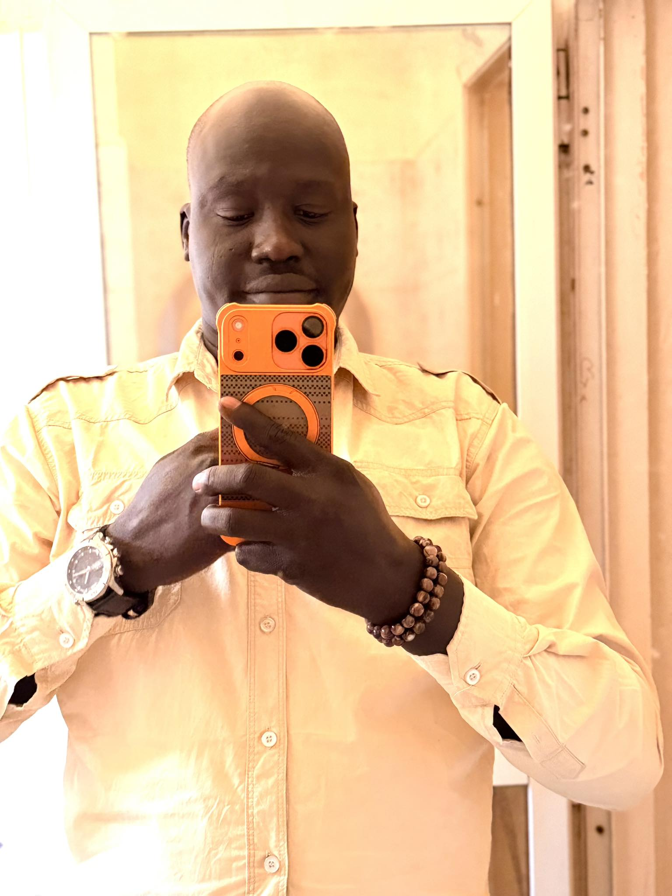

Welcome to My Page
Pato Kuoi Media: He operates a widely followed media organization that provides coverage of significant social and political events in South Sudan, particularly in Lakes State. His platform is noted for documenting traditional marriage ceremonies, cultural events, and regional news.
Wrestling Peter Drury On social media platforms like TikTok, he has earned the nickname "Wrestling Peter Drury" for his distinct and energetic commentary style, often likened to the famous British sports broadcaster.
Public Voice: He is viewed as a "community-centered" media personality who helps audiences feel included in regional stories.
Follow my Facebook page for daily updates, tutorials, and live sessions in every Wrestling and traditional marriage, events.
Latest Updates
April 26, 2026:BOOK WITH US FOR BUSSINESS PROMOTION OR ANY ANNOUNCEMENT
Photo Gallery
Click any photo to view larger. More photos on my Facebook page.

Contact Me
Have a question or want to collaborate? Reach out below:
patokoui@email.com
+211 924333727
Juba, South Sudan